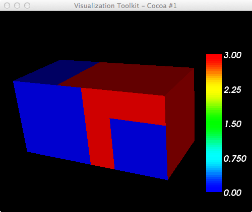
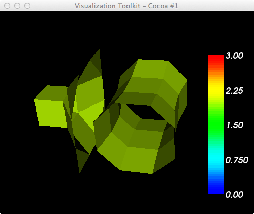
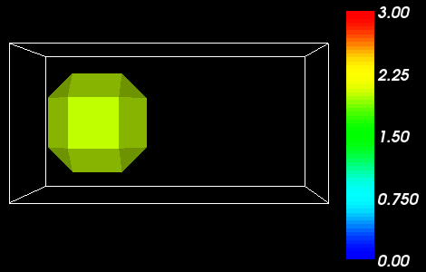
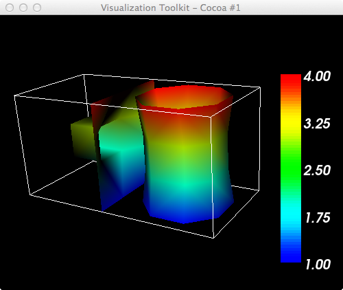
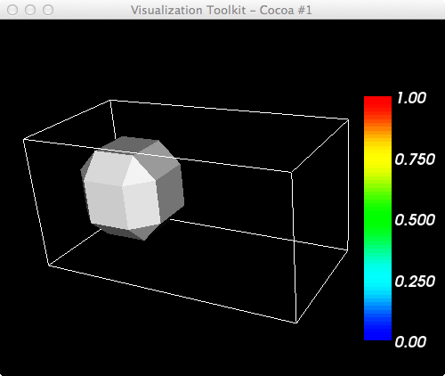

~/dev/vtk-stuff$ ty f_7x4x4.vtk # vtk DataFile Version 3.0 3D data ASCII DATASET STRUCTURED_POINTS DIMENSIONS 7 4 4 SPACING 1 1 1 ORIGIN 0 0 0 POINT_DATA 112 FIELD FieldData 1 Id 1 112 float 0 0 0 3 3 3 3 0 0 0 3 0 0 3 0 0 0 3 0 0 3 0 0 0 3 3 3 3 0 0 0 3 3 3 3 0 2 2 3 1 1 3 0 2 2 3 1 1 3 0 0 0 3 3 3 3 0 0 0 3 3 3 3 0 2 2 3 1 1 3 0 2 2 3 1 1 3 0 0 0 3 3 3 3 0 0 0 3 3 3 3 0 0 0 3 0 0 3 0 0 0 3 0 0 3 0 0 0 3 3 3 3
~/dev/vtk-stuff$ ty f3d.py
import vtk
# blue -> red LUT
lutBlueRed = vtk.vtkLookupTable()
lutBlueRed.SetHueRange(0.667,0.0)
lutBlueRed.Build()
ren1 = vtk.vtkRenderer()
renWin = vtk.vtkRenderWindow()
renWin.AddRenderer(ren1)
iren = vtk.vtkRenderWindowInteractor()
iren.SetRenderWindow(renWin)
reader = vtk.vtkDataSetReader()
reader.SetFileName('f_7x4x4.vtk')
aax = vtk.vtkAssignAttribute()
aax.SetInputConnection(reader.GetOutputPort())
aax.Assign("Id","SCALARS","POINT_DATA")
aax.Update()
srange = aax.GetOutput().GetScalarRange()
print 'CellId range: ',srange # CellId range: (0.0, 3.0)
mapper = vtk.vtkDataSetMapper()
mapper.SetInputConnection(aax.GetOutputPort())
mapper.ScalarVisibilityOn()
mapper.SetScalarRange(srange)
mapper.SetLookupTable(lutBlueRed)
actor = vtk.vtkActor()
actor.SetMapper(mapper)
actor.GetProperty().SetInterpolationToFlat()
ren1.AddActor(actor)
#----------------------
scalarBar = vtk.vtkScalarBarActor()
scalarBar.SetLookupTable(lutBlueRed)
ren1.AddActor2D(scalarBar)
renWin.SetSize(500,400)
renWin.Render()
iren.Start()

Contents[hide] |
cont = vtk.vtkContourFilter() cont.SetInputConnection(aax.GetOutputPort()) cont.SetValue(0,2) mapper = vtk.vtkDataSetMapper() #mapper.SetInputConnection(aax.GetOutputPort()) mapper.SetInputConnection(cont.GetOutputPort())

#cont = vtk.vtkContourFilter() cont = vtk.vtkDiscreteMarchingCubes()

We add another scalar field, Height, to our dataset:
~/dev/vtk-stuff$ ty f_7x4x4_height.vtk # vtk DataFile Version 3.0 3D data ASCII DATASET STRUCTURED_POINTS DIMENSIONS 7 4 4 SPACING 1 1 1 ORIGIN 0 0 0 POINT_DATA 112 FIELD FieldData 2 Id 1 112 float 0 0 0 3 3 3 3 0 0 0 3 0 0 3 0 0 0 3 0 0 3 0 0 0 3 3 3 3 0 0 0 3 3 3 3 0 2 2 3 1 1 3 0 2 2 3 1 1 3 0 0 0 3 3 3 3 0 0 0 3 3 3 3 0 2 2 3 1 1 3 0 2 2 3 1 1 3 0 0 0 3 3 3 3 0 0 0 3 3 3 3 0 0 0 3 0 0 3 0 0 0 3 0 0 3 0 0 0 3 3 3 3 Height 1 112 float 1 1 1 1 1 1 1 1 1 1 1 1 1 1 1 1 1 1 1 1 1 1 1 1 1 1 1 1 2 2 2 2 2 2 2 2 2 2 2 2 2 2 2 2 2 2 2 2 2 2 2 2 2 2 2 2 3 3 3 3 3 3 3 3 3 3 3 3 3 3 3 3 3 3 3 3 3 3 3 3 3 3 3 3 4 4 4 4 4 4 4 4 4 4 4 4 4 4 4 4 4 4 4 4 4 4 4 4 4 4 4 4
~/dev/vtk-stuff$ ty f3d-height.py
import vtk
# blue -> red LUT
lutBlueRed = vtk.vtkLookupTable()
lutBlueRed.SetHueRange(0.667,0.0)
lutBlueRed.Build()
ren1 = vtk.vtkRenderer()
renWin = vtk.vtkRenderWindow()
renWin.AddRenderer(ren1)
iren = vtk.vtkRenderWindowInteractor()
iren.SetRenderWindow(renWin)
reader = vtk.vtkDataSetReader()
reader.SetFileName('f_7x4x4_height.vtk')
aax = vtk.vtkAssignAttribute()
aax.SetInputConnection(reader.GetOutputPort())
aax.Assign("Id","SCALARS","POINT_DATA")
aax.Update()
srange = aax.GetOutput().GetScalarRange()
print 'CellId range: ',srange # CellId range: (0.0, 3.0)
aah = vtk.vtkAssignAttribute()
aah.SetInputConnection(reader.GetOutputPort())
aah.Assign("Height","SCALARS","POINT_DATA")
aah.Update()
hrange = aah.GetOutput().GetScalarRange()
print 'Height range: ',hrange # Height range: (1.0, 4.0)
cont = vtk.vtkContourFilter()
#cont = vtk.vtkDiscreteMarchingCubes()
cont.SetInputConnection(aax.GetOutputPort())
cont.SetValue(0,2)
mapper = vtk.vtkPolyDataMapper()
#mapper.SetInputConnection(aax.GetOutputPort())
mapper.SetInputConnection(cont.GetOutputPort())
mapper.ScalarVisibilityOn()
mapper.SetScalarModeToUsePointFieldData()
#mapper.ColorByArrayComponent("Height",0)
mapper.SelectColorArray("Height")
mapper.SetScalarRange(hrange)
mapper.SetLookupTable(lutBlueRed)
actor = vtk.vtkActor()
actor.SetMapper(mapper)
#actor.GetProperty().SetInterpolationToFlat()
ren1.AddActor(actor)
#----------------------
outline = vtk.vtkOutlineFilter()
outline.SetInputConnection(aax.GetOutputPort())
mapOutline = vtk.vtkPolyDataMapper()
mapOutline.SetInputConnection(outline.GetOutputPort())
outlineActor = vtk.vtkActor()
outlineActor.SetMapper(mapOutline)
outlineActor.GetProperty().SetColor(1, 1, 1)
ren1.AddActor(outlineActor)
#----------------------
scalarBar = vtk.vtkScalarBarActor()
scalarBar.SetLookupTable(lutBlueRed)
#scalarBar.GetPositionCoordinate().SetCoordinateSystemToNormalizedViewport()
#scalarBar.GetPositionCoordinate().SetValue(0.8,0.05)
#scalarBar.SetOrientationToVertical()
#scalarBar.SetWidth(0.1)
#scalarBar.SetHeight(0.9)
#scalarBar.SetPosition(0.88,0.1)
#scalarBar.SetLabelFormat("%-#6.3f")
#scalarBar.SetLabelFormat("%-#3.1f")
#scalarBar.GetLabelTextProperty().SetColor(1,1,1)
#scalarBar.GetTitleTextProperty().SetColor(1,0,0)
ren1.AddActor2D(scalarBar)
renWin.SetSize(500,400)
renWin.Render()
iren.Start()

If we just swap these filters, we get the following (incorrect) result and, strangely, the scalarbar has a different range also:
#cont = vtk.vtkContourFilter() cont = vtk.vtkDiscreteMarchingCubes()
